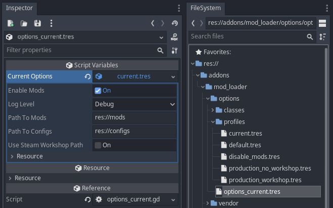

Upcoming Features
This page cover features that are currently only on the development branch.
When features here are merged into main and published in a release, their content will be moved to the proper location.
Table of Contents
Options
via: PR #145
You can change various ModLoader options through Godot's own GUI. In mod_loader/options there's a file called options_current.tres. You can edit the profile by either clicking on it in the options_current.tres file (as shown below), or by editing the currently active profile in the profiles directory.

The directory called profiles has various option profiles that you can quickly swap between. The profile named current is used by default. To use a different profile, drag an drop it onto the box labelled "Current Options" in options_current.tres.
?> At time of writing, only 1 option is supported (enable_mods). This will change as the Options feature is developed further.
Config JSON
via: PR #142
is_mod_config_data_valid
Pass the entire object retrieved via get_mod_config to check if it's valid, ie. to check that no errors occurred when reading the data.
Requires the full config object, not just the data dictionary from get_mod_config().data.
is_mod_config_data_valid(config_obj)
func is_mod_config_data_valid(
# The full config object
config_obj: Dictionary
# True if valid, false otherwise
) -> bool
Example
var config_obj = ModLoader.get_mod_config("AuthorName-ModName")
var is_valid = ModLoader.is_mod_config_data_valid(config_obj)
save_mod_config_dictionary
Saves a full dictionary object to a custom mod config file, overwriting any existing file and file contents. Creates the file if it doesn't already exist.
save_mod_config_dictionary(mod_id, key, value, update_config)
func save_mod_config_dictionary(
# Mod ID
mod_id: String,
# The full config dictionary
data: Dictionary,
# Value to assign to the key
value,
# If true, the config data held in memory will be updated too
update_config: bool = true
# True if saving succeeded, false on error
) -> bool
Example
var mod_id = "AuthorName-ModName"
var my_dictionary = {
"foo": "bar",
"number": 9
}
ModLoader.save_mod_config_dictionary(mod_id, my_dictionary )
save_mod_config_setting
Saves a single setting to a custom mod config file, overwriting any existing file and file contents. Creates the file if it doesn't already exist.
save_mod_config_setting(mod_id, key, value, update_config)
func save_mod_config_setting(
# Mod ID
mod_id: String,
# Key to update
key:String,
# Value to assign to the key
value,
# If true, the config data held in memory will be updated too
update_config: bool = true
# True if saving succeeded, false on error
) -> bool
Example
var mod_id = "AuthorName-ModName"
var my_key = "foo"
var my_val = "bar"
ModLoader.save_mod_config_setting(mod_id, my_key, my_val)
Saving
via PR #143
There are 2 methods you can use to save data to a file:
save_string_to_file
save_string_to_file(save_string, filepath)
func save_string_to_file(
save_string: String,
filepath: String
) -> bool
Example
var my_string = "hello world"
ModLoader.save_string_to_file(my_string, "user://custom_1.txt")
save_dictionary_to_json_file
save_dictionary_to_json_file(data, filepath)
func save_dictionary_to_json_file(
data: Dictionary,
filepath: String
) -> bool
Example
var my_dictionary = {
"foo": "bar"
}
ModLoader.save_dictionary_to_json_file(my_dictionary, "user://custom_2.json")
TODO
These features have been merged into main and released, but there's no documentation for them yet.